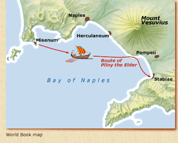
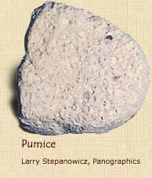

|
 Roamin':
What happened to your uncle?
Pliny: We learned he could not land where he had intended
because of the retreating sea and rocks dislodged from the mountain.
He instead proceeded to Stabiae farther to the south on the shore
of the bay, even though it was clear that the eruption would soon
endanger that area as well. My uncle remained there and calmed the
terrified people with suggestions that the broad sheets of fire
and leaping flames blazing up from the mountain were bonfires, left
by fleeing peasants, or burning houses. Then he went to sleep.
The next day, with ash and pumice becoming deep upon the ground,
and buildings threatening to collapse from the tremors, my uncle
and a number of others attempted to escape by sea. They tied pillows
on their heads for protection against the pumice stones, which were
falling like rain, and started for the shore, using torches to light
their way in the unnatural darkness.
Roamin':
Why couldn't your uncle escape?
Pliny: My uncle and his party soon discovered that the sea
was still too wild. Soon flames and the odor of sulfur caused the
others to flee. But my uncle collapsed. I believe some unusually
gross vapor blocked his breathing and his windpipe, which was not
only naturally weak and constricted, but also chronically inflamed.
A few days afterward, his body was found, still fully clothed as
in life. Its posture was that of a sleeping rather than a dead man.
Roamin':
What a terrible loss! You obviously revered your uncle.
Pliny: That's why I agreed to do this interview-to help ensure
that my uncle's heroic death will be rendered forever deathless.
Roamin':
Have you thought about publishing your remarkable eyewitness story?
Pliny: I have written down my memories of this disaster as
well as credible accounts I have heard from others. But except for
what I have said about my uncle, I believe my narrative is unworthy
of a history.
To learn more about Pompeii before its
untimely destruction, see Welcome to Pompeii.
To return to the main menu,
click on Vesuvius Blows Its Top.
|